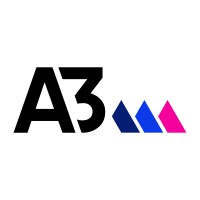

Página Inicial
Cursos
Sistemas para Internet
Sistemas de Informação
Gestão de TI
Analise e Desenvolvimento de Sistema
Parcerias
A3Data
Compass.Uol
Dock
Indra
Conteúdos
Centro Universitário
Coordenação de TI
Projetos de Extensão
Sobre-nós
Inscreva-se
Coordenação de Tecnologia da Informação
A Coordenação de Tecnologia da Informação é o setor responsável por elaborar plano de implantação, elaborando e executando planos de melhoria para aumentar a utilização do sistema.
Saiba Mais...
Empresas parceiras
